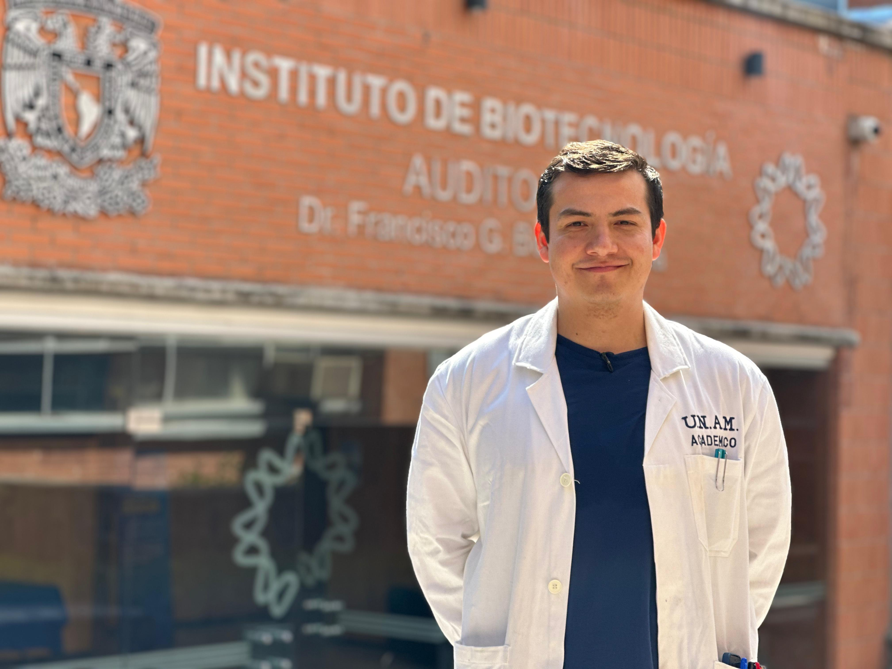

PhD Candidate in Biochemical Sciences · IBt-UNAM
Bioengineer · Programmer · Community Leader
I am a Bioengineer and PhD Candidate in Biochemical Sciences at Instituto de Biotecnología, UNAM, working under Dr. Tonatiuh Ramírez. My work spans upstream bioprocessing with CHO, S. cerevisiae, and E. coli systems; molecular biology (mutant construction & plasmid assembly); and full-stack software development for scientific workflows.
The Host Cell Lab Suite was born from necessity — the repetitive, high-stakes calculations of a PhD routine where a single arithmetic error can cost days of culture work. What started as local Python scripts evolved through AI-assisted live coding into a collection of reliable, offline-ready tools designed to eliminate human error and ensure reproducibility across labs worldwide.
Beyond the bench, I served for 3+ years as Coordinator of the Mexican Bioimaging Workshops (MBW), a high-impact initiative funded by the Chan Zuckerberg Initiative (CZI), Leica, UNAM, and CONACYT. That experience shaped a core conviction: access to good tools is a scientific equity issue — and open source is the answer.
Every day, researchers worldwide perform the same calculations — cell splits, dilutions, growth rates, media preparation — by hand or in fragile spreadsheets. One transcription error can invalidate an experiment, or worse, go unnoticed and compromise downstream data.
Host Cell Lab Suite encodes the correct formulas once, tests them rigorously, and makes them available to any lab, anywhere, for free. Each tool was designed by someone who has made (and caught) those exact errors at the bench — and decided to fix the problem at the source.
Built with a Live Coding workflow and AI assistance, these tools evolved from quick Python scripts into polished, offline-ready PWAs. The goal remains the same: reduce human error in high-frequency tasks so that global data is reproducible, comparable, and trustworthy.
Currently working with CHO cells (batch & fed-batch, shake flasks & stirred-tank bioreactors), designing process strategies to optimize producer cell lines for biotherapeutic quality and productivity — maximizing titer while controlling critical quality attributes. Also proficient in Saccharomyces cerevisiae metabolic engineering and Escherichia coli mutant construction and plasmid assembly.
Biological Models
Bioprocessing
Molecular Biology
Additional
Transitioned from local Python scripts to full-stack web applications through AI-assisted live coding workflows. Fluent in scientific data analysis, statistical modeling, and building offline-ready PWA tools — with a focus on making complex bioprocess data accessible and reproducible.
Languages & Runtimes
Data Science & Machine Learning
Web Development
Tooling & Workflow